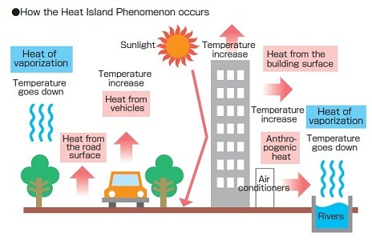
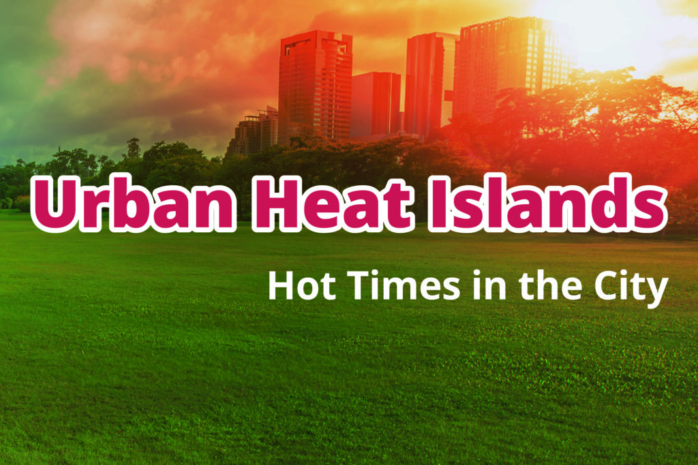

Urban heat island (UHI) manifests as the temperature rise in built-up urban areas relative to the surrounding rural countryside, largely because of the relatively greater proportion of incident solar energy that is absorbed and stored by man-made materials. The direct impact of UHI can be significant on both daytime and night-time temperatures, and the indirect impacts include increased air conditioning loads, deteriorated air and water quality, reduced pavement lifetimes, and exacerbated heat waves. Modifying the thermal properties and emissivity of roofs and paved surfaces and increasing the vegetated area within the city are potential mitigation strategies. A quantitative comparison of their efficacies and costs suggests that so-called cool roofs are likely the most cost-effective UHI mitigation strategy. However, additional research is needed on how to modify surface emissivities and dynamically control surface and material properties, as well as on the health and socioeconomic impacts of UHI.
Materials commonly used in urban areas for pavement and roofs, such as concrete and asphalt, have significantly different thermal bulk properties and surface radiative properties than the surrounding rural areas. This causes a change in the energy budget of the urban area, often leading to higher temperatures than surrounding rural areas.
Another major reason is the lack of evapotranspiration in urban areas.The U.S. Forest Service found in 2018 that cities in the United States are losing 36 million trees each year.With a decreased amount of vegetation, cities also lose the shade and evaporative cooling effect of trees.
Other causes of a UHI are due to geometric effects. The tall buildings within many urban areas provide multiple surfaces for the reflection and absorption of sunlight, increasing the efficiency with which urban areas are heated. This is called the "urban canyon effect".
Another effect of buildings is the blocking of wind, which also inhibits cooling by convection and prevents pollutants from dissipating. Waste heat from automobiles, air conditioning, industry, and other sources also contributes to the UHI.High levels of pollution in urban areas can also increase the UHI, as many forms of pollution change the radiative properties of the atmosphere.UHI not only raises urban temperatures but also increases ozone concentrations because ozone is a greenhouse gas whose formation will accelerate with the increase of temperature.
Due to the urban heat island effect temperature difference is not only usually larger at night than during the day, but also larger in winter than in summer. This is especially true in areas where snow is common, as cities tend to hold snow for shorter periods of time than surrounding rural areas .This decreases the albedo of the city and thereby magnifies the heating effect.
Higher wind speeds in rural areas, particularly in winter, can also function to make them cooler than urban areas. Regions with distinct wet and dry seasons will exhibit a larger urban heat island effect during the dry season. As a result, moist rural soils will cool slower than dry rural soils and act to minimize the nocturnal temperature difference between urban and rural regions.
Species that are good at colonizing can utilize conditions provided by urban heat islands to thrive in regions outside of their normal range.
With temperate climates, urban heat islands will extend the growing season, therefore altering breeding strategies of inhabiting species.This can be obsereved on water temperature.With the temperature of the nearby buildings sometimes reaching over 50 degrees different from the near-surface air temperature, precipitation will warm rapidly, causing runoff into nearby streams, lakes and rivers (or other bodies of water) to provide excessive thermal pollution. The increase in the thermal pollution has the ability to increase water temperature by 20 to 30 degrees. This increase will cause the fish species inhabiting the body of water to undergo thermal stress and shock due to the rapid change in temperature to their climate.
It also altered natural selection process. Over time of living in urban habitats, they have adapted to thrive in warmer climates than in coolerThe presence of non-native species is heavily dependent on the amount of human activity.They make their homes using the shelter provided by the humans in the upper regions of homes, allowing for an influx in their populations due to added protection and reduced predator numbers.
UHIs can have alter effects on climates and those are- local meteorology ,wind pattern, cloud,fog ,humidity.Due to high temperature high upward motion causes more shower and precipitation.Research has been done in a few areas suggesting that metropolitan areas are less susceptible to weak tornadoes due to the turbulent mixing caused by the warmth of the urban heat island.
Other suggested that urban heat islands affect global climate by impacting the jet stream.Several studies have revealed increases in the severity of the effect of heat islands with the progress of climate change.
Within the United States alone, an average of 1,000 people die each year due to extreme heat.As UHIs are characterized by increased temperature, they can potentially increase the magnitude and duration of heat waves within cities.
Research has found that the mortality rate during a heat wave increases exponentially with the maximum temperature, an effect that is exacerbated by the UHI.
The number of individuals exposed to extreme temperatures is increased by the UHI-induced warming.
The nighttime effect of UHIs can be particularly harmful during a heat wave, as it deprives urban residents of the cool relief found in rural areas during the night.Increased temperatures have been reported to cause heat stroke, heat exhaustion, heat syncope, and heat cramps.
This damage due to severe heat stroke can increase the risk of early mortality because the damage can cause severe impairment in organ function.
Other complications of heat stroke include respiratory distress syndrome in adults and disseminated intravascular coagulation.
Some researchers have noted that any compromise to the human body's ability to thermoregulate would in theory increase risk of mortality.This includes illnesses that may affect a person's mobility, awareness, or behavior. Researchers[56] have noted that individuals with cognitive health issues (e.g. depression, dementia, Parkinson's disease) are more at risk when faced with high temperatures and "need to take extra care" as cognitive performance has been shown to be differentially affected by heat.
People with diabetes, are overweight, have sleep deprivation, or have cardiovascular/cerebrovascular conditions should avoid too much heat exposure. Specific examples include anticholinergics, diuretics, phenothiazines and barbiturates. Not only health, but heat can also affect behavior.
Because some parts of some cities may be hotter than their surroundings, concerns have been raised that the effects of urban sprawl might be misinterpreted as an increase in global temperature. Such effects are removed by homogenization from the raw climate record by comparing urban stations with surrounding stations. While the "heat island" warming is an important local effect, there is no evidence that it biases trends in the homogenized historical temperature record.Not all cities show a warming relative to their rural surroundings. After trends were adjusted in urban weather stations around the world to match rural stations in their regions, in an effort to homogenise the temperature record, in 42 percent of cases, cities were getting cooler relative to their surroundings rather than warmer. One reason is that urban areas are heterogeneous, and weather stations are often sited in "cool islands" – parks, for example – within urban areas.
The same urban area that is hotter in the day can be colder than surrounding rural areas at ground level at night, leading to a new term urban cold island. Snow cover in rural areas, for example, insulates plants. This was an unexpected discovery when studying the response of plants to urban environments. The urban cold island effect takes place in the early morning because the building within cities block the sun's solar radiation, as well as the wind speed within the urban centre. Both the urban heat island and urban cold island effects are most intense at times of stable meteorological conditions.Several other studies have observed the urban cool island in semi-arid or arid regions. The reason for this phenomenon is the availability of water and vegetation in the urban region as compared to the surroundings.
The temperature difference between urban areas and the surrounding suburban or rural areas can be as much as 5 °C (9.0 °F).Nearly 40 percent of that increase is due to the prevalence of dark roofs, with the remainder coming from dark-colored pavement and the declining presence of vegetation.
The heat island effect can be counteracted slightly by using white or reflective materials to build houses, roofs, pavements, and roads, thus increasing the overall albedo of the city. Relative to remedying the other sources of the problem, replacing dark roofing requires the least amount of investment for the most immediate return.
Using light-colored concrete has proven effective in reflecting.Paving with light-colored concrete, in addition to replacing asphalt with light-colored concrete, communities may be able to lower average temperatures.
A second option is to increase the amount of well-watered vegetation.
These two options can be combined with the implementation of green roofs.Green roofs are excellent insulators during the warm weather months and the plants cool the surrounding environment.
Air quality is improved as the plants absorb carbon dioxide with concomitant production of oxygen.
A hypothetical "cool communities" program in Los Angeles has projected that urban temperatures could be reduced by approximately 3 °C (5 °F) after planting ten million trees, reroofing five million homes, and painting one-quarter of the roads. Mitigation strategies include:
White roofs: Painting rooftops white has become a common strategy to reduce the heat island effect. White rooftops allow high solar reflectance and high solar emittance, increasing the albedo of the city or area the effect is occurring.
Green roofs: Green roofery is the practice of having vegetation on a roof; such as having trees or a garden. The plants that are on the roof increase the albedo and decrease the urban heat island effect.
Planting trees in cities: It is recommended to plant deciduous trees because they can provide many benefits such as more shade in the summer and not blocking warmth in winter.
Green parking lots: Green parking lots use surfaces other than asphalt and vegetation to limit the impact urban heat island effect.
